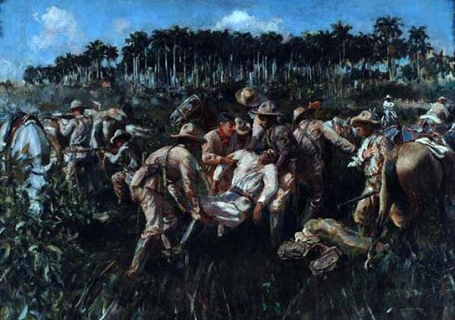
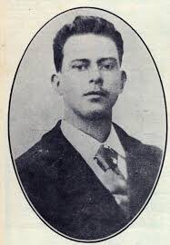
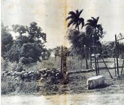
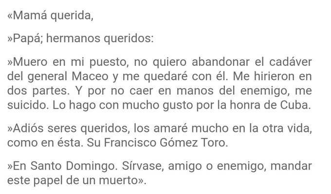
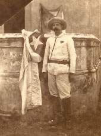
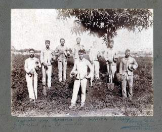
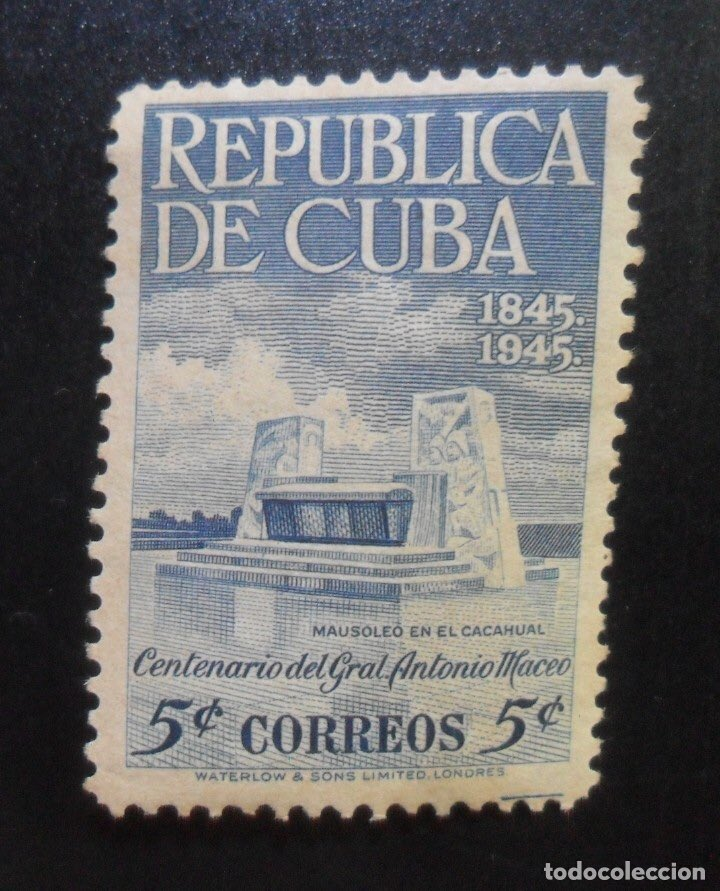

Los Hilos de Monik
La muerte de Maceo y Pachito Gómez Toro
Publicado el 19 de julio de 2020 - 21 tweets - Hilo original en Twitter
1
Cada 7 de diciembre se muestra esta imagen de la muerte de Antonio Maceo y Panchito Gomez Toro en San Pedro.
Pero nunca me interesé en los detalles.
Hoy, de casualidad, me topé con un texto que despertó mi curiosidad. Y leyendo, supe lo dramática que fue la muerte de ambos.
2
Primero, un poco de contexto.
Maceo llegó a Mantua, Pinar del Río, el 22 de enero de 1896. Tres meses antes había partido desde Mangos de Baraguá, en Oriente, para llevar adelante la invasión.
En esos 3 meses sus tropas tuvieron 27 combates y ocuparon 22 pueblos.
3
Una de las estrategias de Weyler fue aislar a Maceo.
Básicamente dividió al país es 3 regiones militares, usando 2 trochas: la de Júcaro a Morón, y la de Mariel a Majana.
Pasaban los meses y Maceo se veía imposibilitado de unirse al resto del ejército.
4
El 8 de septiembre Maceo recibe la expedición de Rius Rivera, cargada de armamentos y de una buena y una mala noticia.
La buena: el joven Panchito Gómez Toro venía en la expedición sin haber dicho de quién era hijo. Maceo lo reconoce, y con alegría lo integra a la tropa.
5
La mala: Maceo se entera de la muerte de su hermano José, recibe una copia del discurso que diera Gómez en su honor, y centenares cartas de condolencia.
Comienza entonces una ofensiva con los nuevos hombres y armas.
Weyler, en respuesta, decreta la la reconcentración.
6
Maceo intentar infructuosamente franquear la trocha, tarea sumamente peligrosa, pues había que acercarse a menos de 20 metros de los atrincheramientos españoles sin ser vistos.
En una de estas incursiones, Maceo cae del caballo. Se había desmayado.
7
Aunque Maceo lo achacó al cansancio y la humedad, Miró y Argenter lo cree que fue el estrés de no poder cruzar.
Eusebio Leal comenta que se dijo luego del desmayo, que Maceo contó haber tenido un sueño premonitorio: su esposa cubierta por un velo y todos sus hermanos muertos.
8
Finalmente aparece una solución para burlar la trocha: ¡un bote! (conservado en el Museo de la Ciudad). Con el mismo, cruzarían por mar sin ser vistos.
Maceo escoge a unos pocos hombres y se lanza a la misión. Panchito no iba: estaba herido en un hombro.
El plan no funcionó.
9
Llovía esa noche, y el mar estaba violento, devolviendo el bote a la orilla.
Maceo insistió en que había que cruzar y propone hacerlo por la boca del Mariel.
La bahía estaba vigilada, y los rebeldes tuvieron que hacer 4 viajes, toda la madrugada.
10
Tras este episodio, Maceo cae enfermo y solo puede tomar leche.
Sin poder moverse, debe esperar a que le manden un caballo. 32 horas después no habían llegado los caballos, por lo que Maceo se enoja y decide emprender la marcha. Los encuentra en el camino.
11
Finalmente llega al ingenio Lucía, donde le informan sobre lo apropiado que sería atacar cualquier parte de La Habana para dar constancia de su presencia y desacreditar a Weyler.
Maceo decide que el 7 de diciembre atacará Marianao.
Panchito se le une unos días antes.
12
En San Pedro le esperaban de 450-600 hombres. Después del almuerzo, Maceo se va a tomar una siesta antes del combate.
Casi a las 3PM se da la voz de alarma. Habían sido sorprendidos por patrullas exploradoras españolas. Al parecer, los mambises se habían descuidado.
13
Sorprendido, Maceo se incorpora y en 10 minutos queda listo. Sale con una escolta de 45 hombres.
Los españoles disparan protegiéndose con una cerca de piedra.
Maceo propone rodearlos por los costados, pero se interpone una cerca de alambre. Ordena a sus hombres picarla.
14
Maceo los supervisa. Cuando les dice: ¡Esto va bien!, una bala le dio en el rostro, fracturándole el maxilar derecho en 3 pedazos y seccionando su carótida.
El Dr. Zertucha, su médico, corre a su ayuda y lo encuentra sin conocimiento.
Maceo muere en menos de 2 minutos.
15
Sus hombres trataron de montarlo en el caballo, pero este muere por otra bala.
El fuego incesante no permite moverlo y deben dejarlo abandonado en el campo para salvar sus vidas.
Al enterarse, Panchito decide irse a recuperar el cuerpo o morir. Zertucha lo acompañó.
16
Cuando ambos intentan subir el cuerpo de Maceo en un caballo, una bala mata también a ese, y cae sobre ambos.
Panchito, quien desde antes tenía ya su brazo en un cabestrillo, había ido prácticamente desarmado. Cuando el caballo le cayó encima, también había recibido 2 balas.
17
Herido de gravedad, Panchito logra escribir esta carta a sus padres y hermanos.
Lo que pasó luego, no me queda claro: algunos textos dicen que Panchito se suicidó usando su machete; otros textos claman que se desmayó y fueron los españoles quienes lo remataron a machetazos.
18
Panchito tenía 21 años al morir. Maceo, 51.
Juan Delgado, del regimiento de Santiago de las Vegas, convence a 19 hombres de regresar a recuperar los cuerpos. Lo logran.
Lavan los cuerpos y los velan por dos horas. En medio de la noche llevan los llevan a la finca Cacahual.
19
Los cuerpos fueron entregados al campesino Pedro Perez y sus 4 hijos, quienes los enterraron en secreto.
Ni siquiera los generales supieron donde estaban.
No fue hasta que terminó la guerra, que el campesino dio su ubicación.
Se les exhumó en septiembre de 1899.
20
El monumento que se encuentra hoy en el Cacahual tiene inscritas las palabras que dijo Juan Delgado cuando buscaba quien le acompañara para recoger los cuerpos:
El que sea cubano y tenga valor, que me siga
21
Incluso Weyler, al enterarse de la muerte de Maceo, declaró públicamente:
Es la pérdida más grande que puede haber sufrido la revolución, porque era un hombre valiente, batallador, incansable, tenaz, y resumía otras cualidades de las que carecían todos los demás caudillos